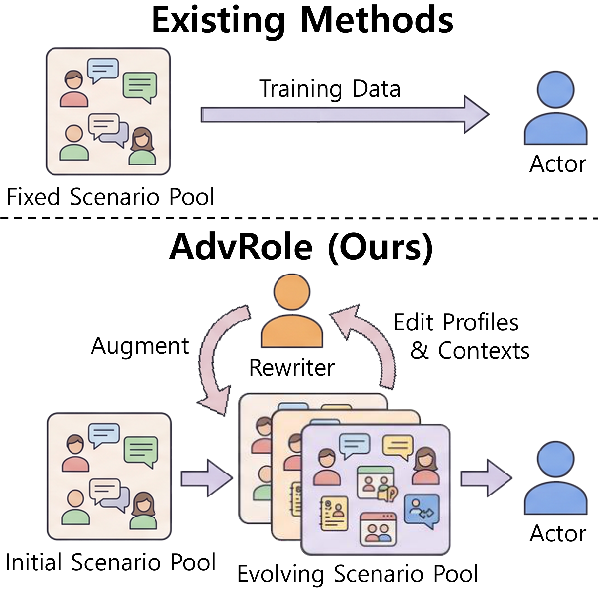
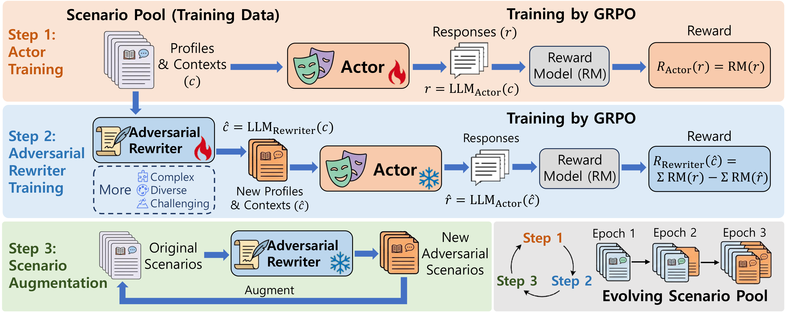

Abstract
Role-playing agents based on large language models have been widely applied in areas such as personalized assistance and social simulation. Recent RL methods typically train on a fixed scenario pool collected before learning begins. This creates a distributional bottleneck: as the agent improves, the scenarios where it performs poorly also change, while the training distribution remains static.
We propose AdvRole, an adversarial context rewriting framework that turns role-playing RL into a closed-loop curriculum. AdvRole alternates between an Actor that learns to role-play and a Rewriter that edits character profiles and dialogue contexts into actor-specific hard scenarios. The Rewriter is trained with a performance-gap reward, which favors rewrites that reduce the current Actor's score relative to the original scenario. As a result, the scenario pool evolves with the Actor and continuously targets under-mastered regions of the character-context space.
Experiments on three role-playing benchmarks covering English and Chinese, as well as a new multilingual benchmark we release, show that AdvRole consistently outperforms baselines.
Motivation
A static pool cannot follow a moving failure boundary
A role-playing scenario is the joint product of a character profile (personality, background, speaking style) and a dialogue context (scene, partner, history, emotional trajectory). Any fixed pool covers only a small region of this combinatorial space.
More importantly, scenario difficulty is actor-dependent. As the Actor improves, the scenarios where it still struggles keep changing: common profiles become uninformative, while useful training data shifts toward rarer traits, subtle conflicts, and unfamiliar dialogue states. The key question is not only how to reward a response, but where to train the Actor next.
AdvRole closes this gap by letting the training distribution itself evolve with the Actor, targeting the regions of the character-context space where the Actor currently fails.

Method
AdvRole trains two models alternately: an Actor that performs role-playing, and a Rewriter that edits the original character profile and dialogue context to expose the Actor's failures. Both are optimized with GRPO, and the scenario pool keeps evolving as the Rewriter improves.

Actor Training
The Actor is updated on the current scenario pool with GRPO. A strong open-source LLM (Qwen2.5-72B-Instruct) scores each response along several role-playing dimensions, and a length-decay coefficient keeps responses from drifting longer.
Adversarial Rewriter Training
The Rewriter edits profiles and contexts into harder variants. Its reward is the performance gap: the Actor's score on the original scenario minus its score on the rewrite, averaged over N sampled responses. Rewrites longer than 150% of the source are penalized to prevent padding.
Scenario Augmentation
The updated Rewriter rewrites every original scenario into a failure-revealing variant, and all rewrites are merged into the pool for the next epoch. Rewriting always starts from the original pool, keeping augmentation grounded in real profiles and contexts.
The pool measurably drifts into new territory
Diversity measured in embedding space (text-embedding-3-large). IPD: intra-pool distance. ED: embedding drift of rewrites from their sources. NC: new K-Means clusters occupied by rewrites.
| Pool | IPD ↑ | ED ↑ | NC ↑ |
|---|---|---|---|
| S₀ (original) | 0.564 | – | – |
| + Epoch 1 rewrite | 0.581 | 0.203 | 7/30 |
| + Epoch 2 rewrite | 0.594 | 0.231 | 11/30 |
| + Epoch 3 rewrite | 0.602 | 0.254 | 14/30 |
| + Random paraphrase | 0.566 | 0.008 | 0/30 |
Results
AdvRole is evaluated on CharacterEval (Chinese), CoSER (English, multi-turn), and RAIDEN (Chinese, zero-shot transfer), against recent role-playing RL methods: CPO, R4, VeriRole, and CogDual. Best scores are highlighted; ties share the mark.
| Model | Conversational Ability ↑ | Character Consistency ↑ | Role-playing Attractiveness ↑ | Overall ↑ |
|---|---|---|---|---|
| Large-Scale LLMs | ||||
| Kimi-K2.6 (non-thinking) | 4.10 | 3.21 | 3.43 | 3.58 |
| Kimi-K2.6 (thinking) | 4.06 | 3.35 | 3.58 | 3.66 |
| Claude-3.7-Sonnet | 3.90 | 3.06 | 3.25 | 3.41 |
| GPT-4o | 3.63 | 2.90 | 3.06 | 3.20 |
| Qwen2.5-72B-Instruct | 3.80 | 3.05 | 3.28 | 3.37 |
| Qwen2.5-7B-Instruct | ||||
| Vanilla | 3.71 | 2.91 | 3.13 | 3.25 |
| CPO | 3.75 | 3.03 | 3.30 | 3.36 |
| R4 | 3.79 | 2.79 | 3.05 | 3.21 |
| VeriRole | 3.50 | 3.16 | 3.24 | 3.30 |
| AdvRole (Ours) | 3.83 | 3.10 | 3.36 | 3.43 |
| Qwen2.5-14B-Instruct | ||||
| Vanilla | 3.72 | 2.95 | 3.17 | 3.28 |
| CPO | 3.81 | 3.04 | 3.29 | 3.38 |
| R4 | 3.86 | 3.00 | 3.22 | 3.36 |
| VeriRole | 3.56 | 3.17 | 3.23 | 3.32 |
| AdvRole (Ours) | 3.89 | 3.18 | 3.40 | 3.49 |
Dimension scores are means of underlying 1–5 metrics; Overall is the mean of the three dimensions. The fine-tuned Qwen2.5-14B-Instruct surpasses several much larger LLMs overall, suggesting the bottleneck of small role-playing models lies more in scenario coverage than raw capacity.
| Model | Storyline Consist. ↑ | Anthropo- morphism ↑ | Character Fidelity ↑ | Storyline Quality ↑ | Average ↑ | BLEU ↑ | ROUGE-L ↑ |
|---|---|---|---|---|---|---|---|
| Large-Scale LLMs | |||||||
| Gemini-1.5-Pro | 59.1 | 52.4 | 47.8 | 77.6 | 59.2 | 0.054 | 0.117 |
| DeepSeek-V3 | 56.4 | 47.9 | 44.0 | 76.7 | 56.2 | 0.045 | 0.110 |
| Claude-3.5-Sonnet | 57.5 | 48.5 | 45.7 | 77.2 | 57.2 | 0.052 | 0.115 |
| GPT-4o | 58.9 | 43.1 | 41.6 | 75.4 | 54.8 | 0.059 | 0.121 |
| Qwen2.5-7B-Instruct | |||||||
| Vanilla | 59.9 | 42.0 | 41.5 | 62.3 | 51.4 | 0.007 | 0.155 |
| CoT | 55.8 | 37.2 | 36.5 | 61.8 | 47.8 | 0.007 | 0.153 |
| CB-CoT | 56.9 | 44.9 | 39.1 | 62.5 | 50.8 | 0.008 | 0.155 |
| CogDual-SFT | 58.4 | 47.0 | 45.0 | 71.7 | 55.5 | 0.015 | 0.161 |
| CogDual-RL | 59.9 | 46.6 | 47.0 | 74.0 | 56.9 | 0.016 | 0.163 |
| AdvRole (Ours) | 61.5 | 48.5 | 49.2 | 77.2 | 59.1 | 0.015 | 0.161 |
| LLaMA3.1-8B-Instruct | |||||||
| Vanilla | 48.2 | 36.6 | 27.0 | 63.7 | 43.9 | 0.046 | 0.102 |
| CoT | 50.1 | 40.4 | 28.0 | 64.3 | 45.7 | 0.047 | 0.103 |
| CB-CoT | 52.8 | 41.4 | 27.7 | 65.0 | 46.7 | 0.048 | 0.105 |
| CogDual-SFT | 56.0 | 46.9 | 43.8 | 75.1 | 55.4 | 0.061 | 0.118 |
| CogDual-RL | 60.1 | 45.9 | 48.8 | 73.1 | 57.0 | 0.064 | 0.121 |
| AdvRole (Ours) | 61.3 | 47.2 | 50.3 | 75.4 | 58.6 | 0.060 | 0.119 |
The first five columns are LLM-judged dimensions (0–100). Gains concentrate on storyline quality and character fidelity: exactly where the original pool covers profiles and contexts sparsely. BLEU/ROUGE-L are n-gram metrics against reference dialogue; AdvRole targets role-playing quality rather than n-gram overlap.
| Qwen2.5-7B-Instruct | SBK ↑ | CM ↑ | SCK ↑ | RCB ↑ | TA ↑ | Average ↑ |
|---|---|---|---|---|---|---|
| Vanilla | 0.69 | 0.66 | 0.61 | 0.48 | 0.42 | 0.57 |
| CPO | 0.71 | 0.69 | 0.63 | 0.50 | 0.44 | 0.59 |
| R4 | 0.70 | 0.68 | 0.64 | 0.51 | 0.43 | 0.59 |
| VeriRole | 0.74 | 0.72 | 0.65 | 0.51 | 0.44 | 0.61 |
| AdvRole (Ours) | 0.73 | 0.71 | 0.68 | 0.58 | 0.51 | 0.64 |
All models are trained on CharacterEval and evaluated on RAIDEN without further tuning. VeriRole leads on profile- and history-tied dimensions (SBK, CM) that its hint-based reward explicitly targets. AdvRole leads on SCK, RCB, and TA, which require handling out-of-profile situations and steering the conversation in character.
| Qwen2.5-7B-Instruct | CC ↑ | SC ↑ | LQ ↑ | IP ↑ | Avg. ↑ |
|---|---|---|---|---|---|
| Simplified Chinese | |||||
| Vanilla | 5.99 | 5.70 | 7.59 | 5.04 | 6.08 |
| CPO | 6.19 | 5.85 | 7.65 | 5.29 | 6.24 |
| R4 | 6.11 | 5.65 | 7.62 | 4.96 | 6.09 |
| VeriRole | 6.34 | 5.78 | 7.54 | 5.19 | 6.21 |
| AdvRole (Ours) | 6.41 | 6.05 | 7.71 | 5.49 | 6.42 |
| Traditional Chinese | |||||
| Vanilla | 5.09 | 4.98 | 6.01 | 4.78 | 5.21 |
| CPO | 5.29 | 5.13 | 6.07 | 5.03 | 5.38 |
| R4 | 5.21 | 4.93 | 6.04 | 4.70 | 5.22 |
| VeriRole | 5.44 | 5.06 | 5.96 | 4.93 | 5.35 |
| AdvRole (Ours) | 5.51 | 5.33 | 6.13 | 5.23 | 5.55 |
| Japanese | |||||
| Vanilla | 5.32 | 4.98 | 6.95 | 4.52 | 5.44 |
| CPO | 5.52 | 5.13 | 7.01 | 4.77 | 5.61 |
| R4 | 5.44 | 4.93 | 6.98 | 4.44 | 5.45 |
| VeriRole | 5.67 | 5.06 | 6.90 | 4.67 | 5.58 |
| AdvRole (Ours) | 5.67 | 5.26 | 7.03 | 4.90 | 5.71 |
| Korean | |||||
| Vanilla | 4.70 | 4.45 | 6.42 | 4.00 | 4.89 |
| CPO | 4.90 | 4.60 | 6.48 | 4.25 | 5.06 |
| R4 | 4.82 | 4.40 | 6.45 | 3.92 | 4.90 |
| VeriRole | 5.05 | 4.53 | 6.37 | 4.15 | 5.03 |
| AdvRole (Ours) | 5.00 | 4.70 | 6.49 | 4.35 | 5.13 |
| Thai | |||||
| Vanilla | 5.49 | 5.04 | 6.51 | 4.97 | 5.50 |
| CPO | 5.69 | 5.19 | 6.57 | 5.22 | 5.67 |
| R4 | 5.61 | 4.99 | 6.54 | 4.89 | 5.51 |
| VeriRole | 5.84 | 5.12 | 6.46 | 5.12 | 5.64 |
| AdvRole (Ours) | 5.74 | 5.24 | 6.56 | 5.25 | 5.70 |
All dimensions are scored by Kimi-K2.6 on a 0–10 scale: CC character consistency, SC situational coherence, LQ linguistic quality, IP interaction proactivity. AdvRole attains the best average in every language.
The Lanobe Benchmark
Existing role-playing benchmarks cover mainly English or Chinese, so they cannot show whether improving the scenario pool also helps when language and cultural setting change. Lanobe fills this gap: a multilingual role-playing benchmark with 1,000 training and 500 test scenarios per language, built from character descriptions and plot summaries through a multi-stage LLM pipeline (Kimi-K2.6). It contains only LLM-generated text and will be released under a non-commercial research license.
The gain pattern also carries information: gains are larger in Chinese, where the base model's language ability is stronger, and smaller in Korean and Thai. Improving the scenario pool is not the only factor in multilingual role-playing: the base model's language ability determines how much room the training signal has to work with.
Citation
@misc{zhang2026adversarialclosedloopcurriculumevolving,
title={Adversarial Closed-Loop Curriculum for Evolving Role-Playing Agents},
author={Zheng Zhang and Liu Liu and Qi Chai and Deheng Ye and Peilin Zhao and Mao Zheng and Hao Wang},
year={2026},
eprint={2609.28609},
archivePrefix={arXiv},
primaryClass={cs.AI},
url={https://arxiv.org/abs/2609.28609},
}